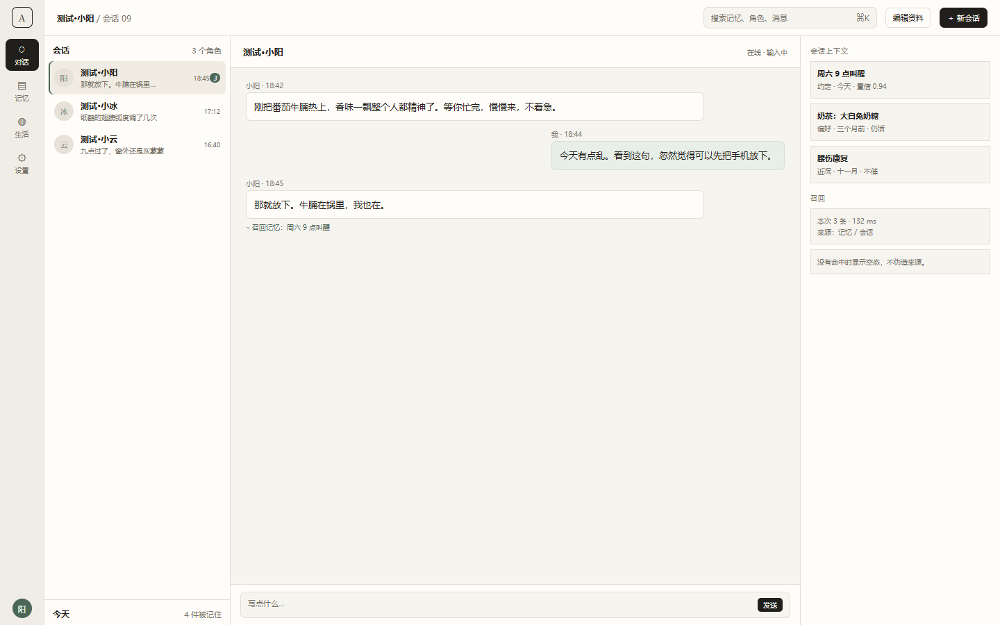
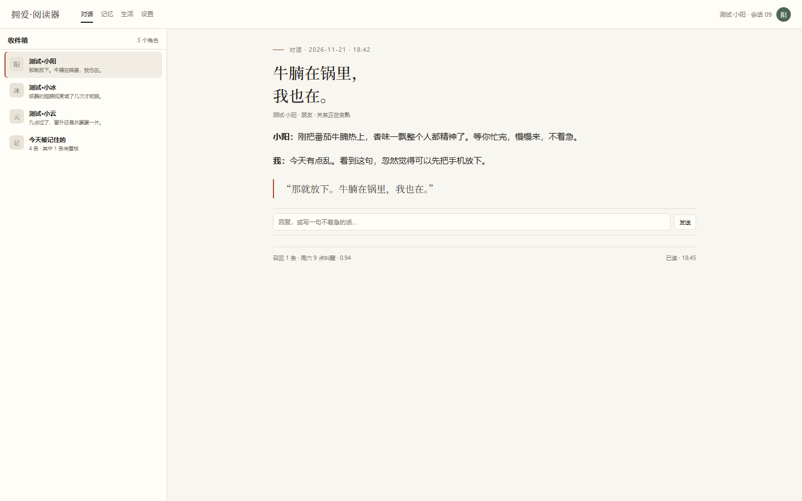
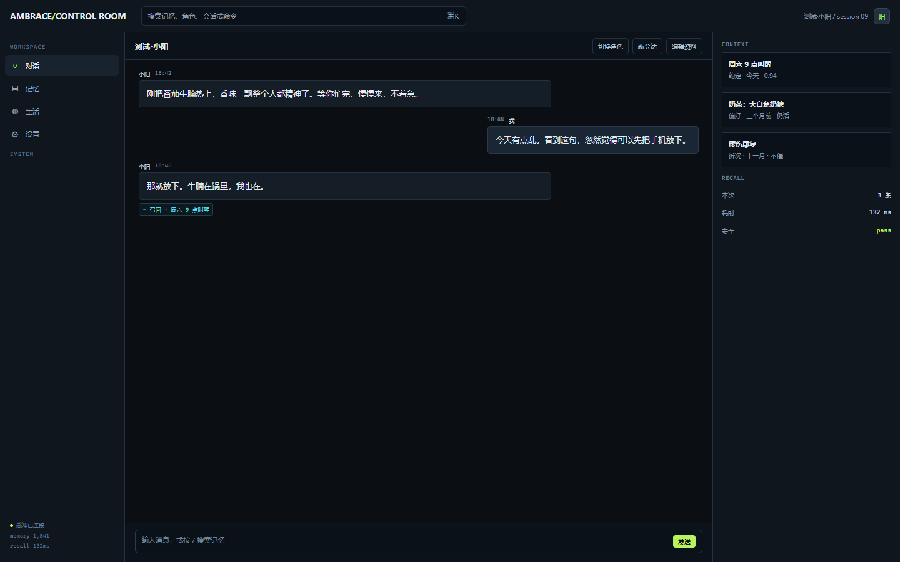

工作台 / 主从结构
四栏：导航、会话/记忆列表、主区、上下文。最接近现有 PWA，改动风险最低。
打开原型 →上一版偏海报，已废。这一轮三条线都是可操作的软件壳：导航、列表、详情、上下文、空/错/加载状态；差别在信息密度与主从结构，不在视觉噱头。

四栏：导航、会话/记忆列表、主区、上下文。最接近现有 PWA，改动风险最低。
打开原型 →
左收件箱 + 右文档；适合慢读、回看和长内容。移动端列表与阅读分离。
打开原型 →
三栏高密度，记忆索引、召回统计、上下文同屏。适合重度用户。
打开原型 →方向卡与备选见 directions.md；手机截图在 shots/。内容来自测试账号，头像用姓名印记，不伪造真人照片。选定方向后我才改生产 PWA。